Chapter 34: Animal Nutrition and the Digestive System¶
Introduction¶
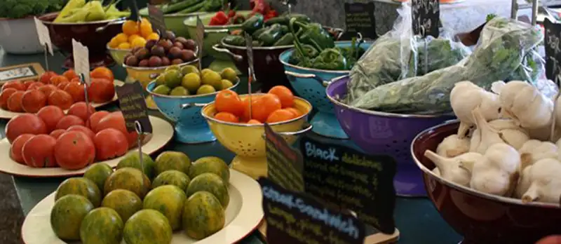
All living organisms need nutrients to survive. While plants can obtain the molecules required for cellular function through the process of photosynthesis, most animals obtain their nutrients by the consumption of other organisms. At the cellular level, the biological molecules necessary for animal function are amino acids, lipid molecules, nucleotides, and simple sugars. However, the food consumed consists of protein, fat, and complex carbohydrates. Animals must convert these macromolecules into the simple molecules required for maintaining cellular functions, such as assembling new molecules, cells, and tissues. The conversion of the food consumed to the nutrients required is a multistep process involving digestion and absorption. During digestion, food particles are broken down to smaller components, and later, they are absorbed by the body.
One of the challenges in human nutrition is maintaining a balance between food intake, storage, and energy expenditure. Imbalances can have serious health consequences. For example, eating too much food while not expending much energy leads to obesity, which in turn will increase the risk of developing illnesses such as type-2 diabetes and cardiovascular disease. The recent rise in obesity and related diseases makes understanding the role of diet and nutrition in maintaining good health all the more important.
34.1 Digestive Systems¶
Learning Objectives
By the end of this section, you will be able to do the following:
- Explain the processes of digestion and absorption
- Compare and contrast different types of digestive systems
- Explain the specialized functions of the organs involved in processing food in the body
- Describe the ways in which organs work together to digest food and absorb nutrients
Animals obtain their nutrition from the consumption of other organisms. Depending on their diet, animals can be classified into the following categories: plant eaters (herbivores), meat eaters (carnivores), and those that eat both plants and animals (omnivores). The nutrients and macromolecules present in food are not immediately accessible to the cells. There are a number of processes that modify food within the animal body in order to make the nutrients and organic molecules accessible for cellular function. As animals evolved in complexity of form and function, their digestive systems have also evolved to accommodate their various dietary needs.
Herbivores, Omnivores, and Carnivores¶
Herbivores are animals whose primary food source is plant-based. Examples of herbivores, as shown in Figure 34.2 include vertebrates like deer, koalas, and some bird species, as well as invertebrates such as crickets and caterpillars. These animals have evolved digestive systems capable of handling large amounts of plant material. Herbivores can be further classified into frugivores (fruit-eaters), granivores (seed eaters), nectivores (nectar feeders), and folivores (leaf eaters).
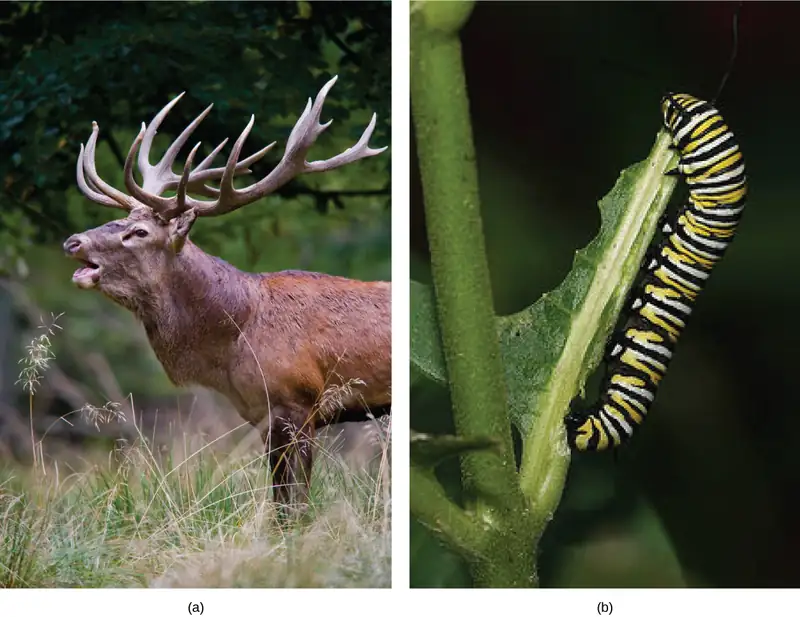
Carnivores are animals that eat other animals. The word carnivore is derived from Latin and literally means “meat eater.” Wild cats such as lions, shown in Figure 34.3a and tigers are examples of vertebrate carnivores, as are snakes and sharks, while invertebrate carnivores include sea stars, spiders, and ladybugs, shown in Figure 34.3b. Obligate carnivores are those that rely entirely on animal flesh to obtain their nutrients; examples of obligate carnivores are members of the cat family, such as lions and cheetahs. Facultative carnivores are those that also eat non-animal food in addition to animal food. Note that there is no clear line that differentiates facultative carnivores from omnivores; dogs would be considered facultative carnivores.
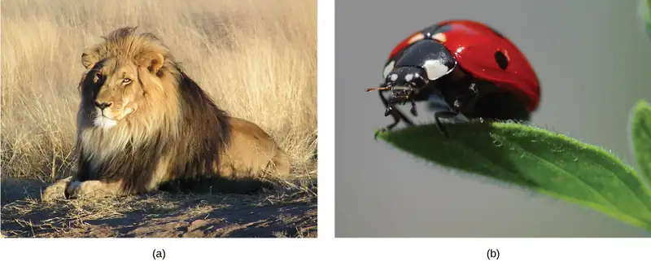
Omnivores are animals that eat both plant- and animal-derived food. In Latin, omnivore means to eat everything. Humans, bears (shown in Figure 34.4a), and chickens are example of vertebrate omnivores; invertebrate omnivores include cockroaches and crayfish (shown in Figure 34.4b).
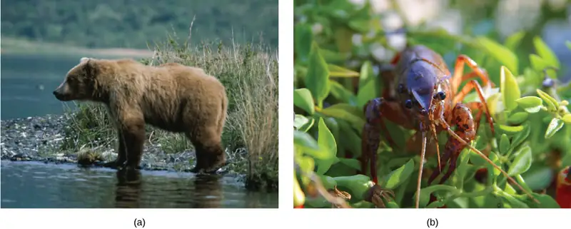
Invertebrate Digestive Systems¶
Animals have evolved different types of digestive systems to aid in the digestion of the different foods they consume. The simplest example is that of a gastrovascular cavity and is found in organisms with only one opening for digestion. Platyhelminthes (flatworms), Ctenophora (comb jellies), and Cnidaria (coral, jelly fish, and sea anemones) use this type of digestion. Gastrovascular cavities, as shown in Figure 34.5a, are typically a blind tube or cavity with only one opening, the “mouth”, which also serves as an “anus”. Ingested material enters the mouth and passes through a hollow, tubular cavity. Cells within the cavity secrete digestive enzymes that break down the food. The food particles are engulfed by the cells lining the gastrovascular cavity.
The alimentary canal, shown in Figure 34.5b, is a more advanced system: it consists of one tube with a mouth at one end and an anus at the other. Earthworms are an example of an animal with an alimentary canal. Once the food is ingested through the mouth, it passes through the esophagus and is stored in an organ called the crop; then it passes into the gizzard where it is churned and digested. From the gizzard, the food passes through the intestine, the nutrients are absorbed, and the waste is eliminated as feces, called castings, through the anus.
![Part A shows a hydra, which has a vase-shaped body with tentacles around the rim. The hydras mouth is located between the tentacles, at the top of the vase shaped body. Next to the hydra is a jellyfish medusa, which is bell shaped with tentacles hanging down from the edge of the bell. The mouth, in the lower middle part of the body, opens into the gastrovascular cavity. Part B shows a nematode, which has a long, tube-like body that is wide at one end and tapers down to a tail at the other. The mouth is in the front of the wide end. It opens into an esophagus, then a pharynx. The pharynx empties into a long intestine, which ends at the anus a short distance before the tail.](img/figure-34-01-04ab.webp)
Vertebrate Digestive Systems¶
Vertebrates have evolved more complex digestive systems to adapt to their dietary needs. Some animals have a single stomach, while others have multi-chambered stomachs. Birds have developed a digestive system adapted to eating unmasticated food.
Monogastric: Single-chambered Stomach¶
As the word monogastric suggests, this type of digestive system consists of one (“mono”) stomach chamber (“gastric”). Humans and many animals have a monogastric digestive system as illustrated in Figure 34.6ab. The process of digestion begins with the mouth and the intake of food. The teeth play an important role in masticating (chewing) or physically breaking down food into smaller particles. The enzymes present in saliva also begin to chemically break down food. The esophagus is a long tube that connects the mouth to the stomach. Using peristalsis, or wave-like smooth muscle contractions, the muscles of the esophagus push the food towards the stomach. In order to speed up the actions of enzymes in the stomach, the stomach is an extremely acidic environment, with a pH between 1.5 and 2.5. The gastric juices, which include enzymes in the stomach, act on the food particles and continue the process of digestion. Further breakdown of food takes place in the small intestine where enzymes produced by the liver, the small intestine, and the pancreas continue the process of digestion. The nutrients are absorbed into the bloodstream across the epithelial cells lining the walls of the small intestines. The waste material travels on to the large intestine where water is absorbed and the drier waste material is compacted into feces; it is stored until it is excreted through the rectum.
![The basic components of the human and rabbit digestive system are the same: each begins at the mouth. Food is swallowed through the esophagus and into the kidney-shaped stomach. The liver is located on top of the stomach, and the pancreas is underneath. Food passes from the stomach to the long, winding small intestine. From there it enters the wide large intestine before passing out the anus. At the junction of the small and large intestine is a pouch called the cecum. The small and large intestines are much longer in rabbits than in humans, and the cecum is much longer as well.](img/figure-34-01-05ab.webp)
Avian¶
Birds face special challenges when it comes to obtaining nutrition from food. They do not have teeth and so their digestive system, shown in Figure 34.7, must be able to process un-masticated food. Birds have evolved a variety of beak types that reflect the vast variety in their diet, ranging from seeds and insects to fruits and nuts. Because most birds fly, their metabolic rates are high in order to efficiently process food and keep their body weight low. The stomach of birds has two chambers: the proventriculus, where gastric juices are produced to digest the food before it enters the stomach, and the gizzard, where the food is stored, soaked, and mechanically ground. The undigested material forms food pellets that are sometimes regurgitated. Most of the chemical digestion and absorption happens in the intestine and the waste is excreted through the cloaca.
![Illustration shows an avian digestive system. Food is swallowed through the esophagus into the crop, which is shaped like an upside-down heart. From the bottom of the crop food enters a tubular proventriculus, which empties into a spherical gizzard. From the gizzard, food enters the small intestine, then the large intestine. Waste exits the body through the cloaca. The liver and pancreas are located between the crop and gizzard. Rather than a single cecum, birds have two caeca at the junction of the small and large intestine.](img/figure-34-01-06.webp)
Evolution Connection: Avian Adaptations
Birds have a highly efficient, simplified digestive system. Recent fossil evidence has shown that the evolutionary divergence of birds from other land animals was characterized by streamlining and simplifying the digestive system. Unlike many other animals, birds do not have teeth to chew their food. In place of lips, they have sharp pointy beaks. The horny beak, lack of jaws, and the smaller tongue of the birds can be traced back to their dinosaur ancestors. The emergence of these changes seems to coincide with the inclusion of seeds in the bird diet. Seed-eating birds have beaks that are shaped for grabbing seeds and the two-compartment stomach allows for delegation of tasks. Since birds need to remain light in order to fly, their metabolic rates are very high, which means they digest their food very quickly and need to eat often. Contrast this with the ruminants, where the digestion of plant matter takes a very long time.
Ruminants¶
Ruminants are mainly herbivores like cows, sheep, and goats, whose entire diet consists of eating large amounts of roughage or fiber. They have evolved digestive systems that help them digest vast amounts of cellulose. An interesting feature of the ruminants’ mouth is that they do not have upper incisor teeth. They use their lower teeth, tongue and lips to tear and chew their food. From the mouth, the food travels to the esophagus and on to the stomach.
To help digest the large amount of plant material, the stomach of the ruminants is a multi-chambered organ, as illustrated in Figure 34.8. The four compartments of the stomach are called the rumen, reticulum, omasum, and abomasum. These chambers contain many microbes that breakdown cellulose and ferment ingested food. The abomasum is the “true” stomach and is the equivalent of the monogastric stomach chamber where gastric juices are secreted. The four-compartment gastric chamber provides larger space and the microbial support necessary to digest plant material in ruminants. The fermentation process produces large amounts of gas in the stomach chamber, which must be eliminated. As in other animals, the small intestine plays an important role in nutrient absorption, and the large intestine helps in the elimination of waste.
![Illustration shows the digestive system of a goat. Food passes from the mouth, through the esophagus and into the rumen. It circulates through the rumen, then moves forward, and down into the small, pouch-shaped reticulum. From the reticulum the food, which is now cud, is regurgitated. The animal chews the cud, and then swallows it into the coiled omasum, which sits between the reticulum and the rumen. After circulating through the omasum the food passes onto the fourth stomach, the abomasum, where it is digested by enzymes. The food then enters the small intestine, then the large intestine. Waste is excreted through the anus.](img/figure-34-01-07.webp)
Pseudo-ruminants¶
Some animals, such as camels and alpacas, are pseudo-ruminants. They eat a lot of plant material and roughage. Digesting plant material is not easy because plant cell walls contain the polymeric sugar molecule cellulose. The digestive enzymes of these animals cannot breakdown cellulose, but microorganisms present in the digestive system can. Therefore, the digestive system must be able to handle large amounts of roughage and break down the cellulose. Pseudo-ruminants have a three-chamber stomach in the digestive system. However, their cecum—a pouched organ at the beginning of the large intestine containing many microorganisms that are necessary for the digestion of plant materials—is large and is the site where the roughage is fermented and digested. These animals do not have a rumen but have an omasum, abomasum, and reticulum.
Parts of the Digestive System¶
The vertebrate digestive system is designed to facilitate the transformation of food matter into the nutrient components that sustain organisms.
Oral Cavity¶
The oral cavity, or mouth, is the point of entry of food into the digestive system, illustrated in Figure 34.9. The food consumed is broken into smaller particles by mastication, the chewing action of the teeth. All mammals have teeth and can chew their food.
The extensive chemical process of digestion begins in the mouth. As food is being chewed, saliva, produced by the salivary glands, mixes with the food. Saliva is a watery substance produced in the mouths of many animals. There are three major glands that secrete saliva—the parotid, the submandibular, and the sublingual. Saliva contains mucus that moistens food and buffers the pH of the food. Saliva also contains immunoglobulins and lysozymes, which have antibacterial action to reduce tooth decay by inhibiting growth of some bacteria. Saliva also contains an enzyme called salivary amylase that begins the process of converting starches in the food into a disaccharide called maltose. Another enzyme called lipase is produced by the cells in the tongue. Lipases are a class of enzymes that can breakdown triglycerides. The lingual lipase begins the breakdown of fat components in the food. The chewing and wetting action provided by the teeth and saliva prepare the food into a mass called the bolus for swallowing. The tongue helps in swallowing—moving the bolus from the mouth into the pharynx. The pharynx opens to two passageways: the trachea, which leads to the lungs, and the esophagus, which leads to the stomach. The trachea has an opening called the glottis, which is covered by a cartilaginous flap called the epiglottis. When swallowing, the epiglottis closes the glottis and food passes into the esophagus and not the trachea. This arrangement allows food to be kept out of the trachea.
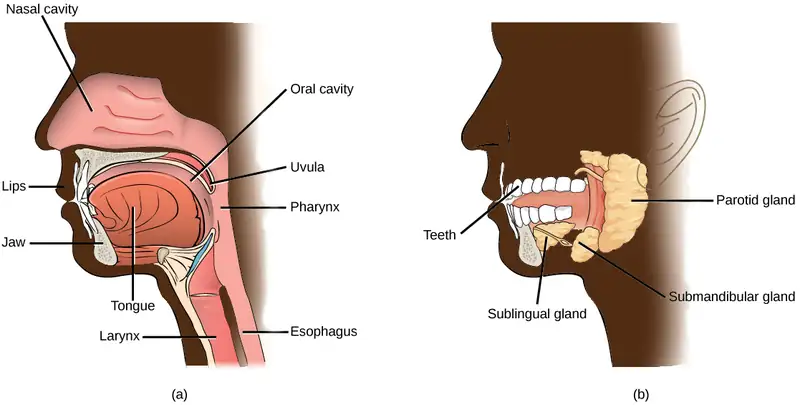
Esophagus¶
The esophagus is a tubular organ that connects the mouth to the stomach. The chewed and softened food passes through the esophagus after being swallowed. The smooth muscles of the esophagus undergo a series of wave like movements called peristalsis that push the food toward the stomach, as illustrated in Figure 34.10. The peristalsis wave is unidirectional—it moves food from the mouth to the stomach, and reverse movement is not possible. The peristaltic movement of the esophagus is an involuntary reflex; it takes place in response to the act of swallowing.
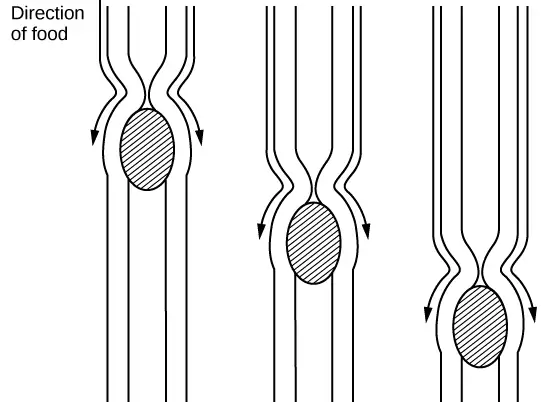
A ring-like muscle called a sphincter forms valves in the digestive system. The gastro-esophageal sphincter is located at the stomach end of the esophagus. In response to swallowing and the pressure exerted by the bolus of food, this sphincter opens, and the bolus enters the stomach. When there is no swallowing action, this sphincter is shut and prevents the contents of the stomach from traveling up the esophagus. Many animals have a true sphincter; however, in humans, there is no true sphincter, but the esophagus remains closed when there is no swallowing action. Acid reflux or “heartburn” occurs when the acidic digestive juices escape into the esophagus.
Stomach¶
A large part of digestion occurs in the stomach, shown in Figure 34.11. The stomach is a saclike organ that secretes gastric digestive juices. The pH in the stomach is between 1.5 and 2.5. This highly acidic environment is required for the chemical breakdown of food and the extraction of nutrients. When empty, the stomach is a rather small organ; however, it can expand to up to 20 times its resting size when filled with food. This characteristic is particularly useful for animals that need to eat when food is available.
Visual Connection
![Illustration shows the human lower digestive system, which begins with the stomach, a sac that lies above the large intestine. The stomach empties into the small intestine, which is a long, highly folded tube. The beginning of the small intestine is called the duodenum, the long middle part is called the jejunum, and the end is called the ileum. The ileum empties into the large intestine on the right side of the body. Beneath the junction of the small and large intestine is a small pouch called the cecum. The appendix is at the bottom end of the cecum. The large intestine travels up the left side of the body, across the top of the small intestine, then down the right side of the body. These parts of the large intestine are called the ascending colon, the transverse colon and the descending colon, respectively. The large intestine empties into the rectum, which is connected to the anus. The pancreas is sandwiched between the stomach and large intestine. The liver is a triangular organ that sits above and slightly to the right of the stomach. The gallbladder is a small bulb between the liver and stomach.](img/figure-b34-01-10.webp)
Which of the following statements about the digestive system is false?
- Chyme is a mixture of food and digestive juices that is produced in the stomach.
- Food enters the large intestine before the small intestine.
- In the small intestine, chyme mixes with bile, which emulsifies fats.
- The stomach is separated from the small intestine by the pyloric sphincter.
The stomach is also the major site for protein digestion in animals other than ruminants. Protein digestion is mediated by an enzyme called pepsin in the stomach chamber. Pepsin is secreted by the chief cells in the stomach in an inactive form called pepsinogen. Pepsin breaks peptide bonds and cleaves proteins into smaller polypeptides; it also helps activate more pepsinogen, starting a positive feedback mechanism that generates more pepsin. Another cell type—parietal cells—secrete hydrogen and chloride ions, which combine in the lumen to form hydrochloric acid, the primary acidic component of the stomach juices. Hydrochloric acid helps to convert the inactive pepsinogen to pepsin. The highly acidic environment also kills many microorganisms in the food and, combined with the action of the enzyme pepsin, results in the hydrolysis of protein in the food. Chemical digestion is facilitated by the churning action of the stomach. Contraction and relaxation of smooth muscles mixes the stomach contents about every 20 minutes. The partially digested food and gastric juice mixture is called chyme. Chyme passes from the stomach to the small intestine. Further protein digestion takes place in the small intestine. Gastric emptying occurs within two to six hours after a meal. Only a small amount of chyme is released into the small intestine at a time. The movement of chyme from the stomach into the small intestine is regulated by the pyloric sphincter.
When digesting protein and some fats, the stomach lining must be protected from getting digested by pepsin. There are two points to consider when describing how the stomach lining is protected. First, as previously mentioned, the enzyme pepsin is synthesized in the inactive form. This protects the chief cells, because pepsinogen does not have the same enzyme functionality of pepsin. Second, the stomach has a thick mucus lining that protects the underlying tissue from the action of the digestive juices. When this mucus lining is ruptured, ulcers can form in the stomach. Ulcers are open wounds in or on an organ caused by bacteria (Helicobacter pylori) when the mucus lining is ruptured and fails to reform.
Small Intestine¶
Chyme moves from the stomach to the small intestine. The small intestine is the organ where the digestion of protein, fats, and carbohydrates is completed. The small intestine is a long tube-like organ with a highly folded surface containing finger-like projections called the villi. The apical surface of each villus has many microscopic projections called microvilli. These structures, illustrated in Figure 34.12, are lined with epithelial cells on the luminal side and allow for the nutrients to be absorbed from the digested food and absorbed into the bloodstream on the other side. The villi and microvilli, with their many folds, increase the surface area of the intestine and increase absorption efficiency of the nutrients. Absorbed nutrients in the blood are carried into the hepatic portal vein, which leads to the liver. There, the liver regulates the distribution of nutrients to the rest of the body and removes toxic substances, including drugs, alcohol, and some pathogens.
Visual Connection
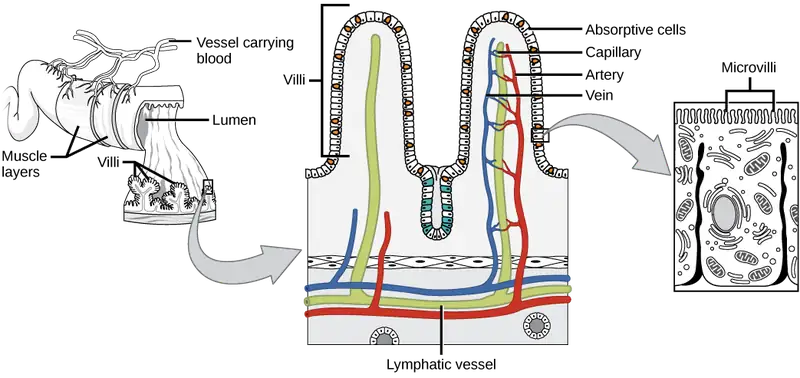
Which of the following statements about the small intestine is false?
- Absorptive cells that line the small intestine have microvilli, small projections that increase surface area and aid in the absorption of food.
- The inside of the small intestine has many folds, called villi.
- Microvilli are lined with blood vessels as well as lymphatic vessels.
- The inside of the small intestine is called the lumen.
The human small intestine is over 6m long and is divided into three parts: the duodenum, the jejunum, and the ileum. The “C-shaped,” fixed part of the small intestine is called the duodenum and is shown in Figure 34.11. The duodenum is separated from the stomach by the pyloric sphincter which opens to allow chyme to move from the stomach to the duodenum. In the duodenum, chyme is mixed with pancreatic juices in an alkaline solution rich in bicarbonate that neutralizes the acidity of chyme and acts as a buffer. Pancreatic juices also contain several digestive enzymes. Digestive juices from the pancreas, liver, and gallbladder, as well as from gland cells of the intestinal wall itself, enter the duodenum. Bile is produced in the liver and stored and concentrated in the gallbladder. Bile contains bile salts which emulsify lipids while the pancreas produces enzymes that catabolize starches, disaccharides, proteins, and fats. These digestive juices break down the food particles in the chyme into glucose, triglycerides, and amino acids. The bulk of chemical digestion of food takes place in the duodenum. Absorption of fatty acids also takes place in the duodenum.
The second part of the small intestine is called the jejunum, shown in Figure 34.11. Here, hydrolysis of nutrients is continued while most of the carbohydrates and amino acids are absorbed through the intestinal lining. Some chemical digestion and the bulk of nutrient absorption occurs in the jejunum.
The ileum, also illustrated in Figure 34.11 is the last part of the small intestine and here the bile salts and vitamins are absorbed into the bloodstream. The undigested food is sent to the colon from the ileum via peristaltic movements of the muscle. The ileum ends and the large intestine begins at the ileocecal valve. The vermiform, “worm-like,” appendix is located at the ileocecal valve. The appendix of humans secretes no enzymes and has an insignificant role in immunity.
Large Intestine¶
The large intestine, illustrated in Figure 34.13, reabsorbs the water from the undigested food material and processes the waste material. The human large intestine is much smaller in length compared to the small intestine but larger in diameter. It has three parts: the cecum, the colon, and the rectum. The cecum joins the ileum to the colon and is the receiving pouch for the waste matter. The colon is home to many bacteria or “intestinal flora” that aid in the digestive processes. The colon can be divided into four regions, the ascending colon, the transverse colon, the descending colon, and the sigmoid colon. The main functions of the colon are to extract the water and mineral salts from undigested food, and to store waste material. Carnivorous mammals have a shorter large intestine compared to herbivorous mammals due to their diet.
![Illustration shows the structure of the large intestine, which begins with the ascending colon. Below the ascending colon is the cecum. The vermiform appendix is a small projection at the bottom of the cecum. The ascending colon travels up the right side of the body, then turns into the transverse colon. On the left side of the body the large intestine turns again, into the descending colon. At the bottom, the descending colon curves up; this part of the intestine is called the sigmoid colon. The sigmoid colon empties into the rectum. The rectum travels straight down, to the anus.](img/figure-34-01-12.webp)
Rectum and Anus¶
The rectum is the terminal end of the large intestine, as shown in Figure 34.13. The primary role of the rectum is to store the feces until defecation. The feces are propelled using peristaltic movements during elimination. The anus is an opening at the far-end of the digestive tract and is the exit point for the waste material. Two sphincters between the rectum and anus control elimination: the inner sphincter is involuntary and the outer sphincter is voluntary.
Accessory Organs¶
The organs discussed above are the organs of the digestive tract through which food passes. Accessory organs are organs that add secretions (enzymes) that catabolize food into nutrients. Accessory organs include salivary glands, the liver, the pancreas, and the gallbladder. The liver, pancreas, and gallbladder are regulated by hormones in response to the food consumed.
The liver is the largest internal organ in humans and it plays a very important role in digestion of fats and detoxifying blood. The liver produces bile, a digestive juice that is required for the breakdown of fatty components of the food in the duodenum. The liver also processes the vitamins and fats and synthesizes many plasma proteins.
The pancreas is another important gland that secretes digestive juices. The chyme produced from the stomach is highly acidic in nature; the pancreatic juices contain high levels of bicarbonate, an alkali that neutralizes the acidic chyme. Additionally, the pancreatic juices contain a large variety of enzymes that are required for the digestion of protein and carbohydrates.
The gallbladder is a small organ that aids the liver by storing bile and concentrating bile salts. When chyme containing fatty acids enters the duodenum, the bile is secreted from the gallbladder into the duodenum.
34.2 Nutrition and Energy Production¶
Learning Objectives
By the end of this section, you will be able to do the following:
- Explain why an animal’s diet should be balanced and meet the needs of the body
- Define the primary components of food
- Describe the essential nutrients required for cellular function that cannot be synthesized by the animal body
- Explain how energy is produced through diet and digestion
- Describe how excess carbohydrates and energy are stored in the body
Given the diversity of animal life on our planet, it is not surprising that the animal diet would also vary substantially. The animal diet is the source of materials needed for building DNA and other complex molecules needed for growth, maintenance, and reproduction; collectively these processes are called biosynthesis. The diet is also the source of materials for ATP production in the cells. The diet must be balanced to provide the minerals and vitamins that are required for cellular function.
Food Requirements¶
What are the fundamental requirements of the animal diet? The animal diet should be well balanced and provide nutrients required for bodily function and the minerals and vitamins required for maintaining structure and regulation necessary for good health and reproductive capability. These requirements for a human are illustrated graphically in Figure 34.14
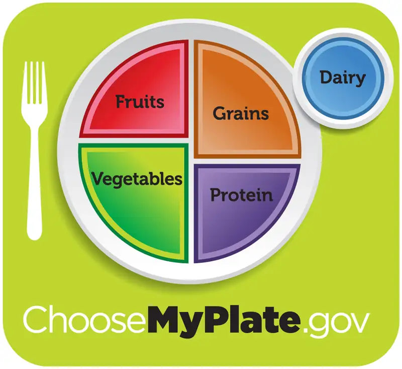
Interactive
The first step in ensuring that you are meeting the food requirements of your body is an awareness of the food groups and the nutrients they provide. To learn more about each food group and the recommended daily amounts, explore this interactive site by the United States Department of Agriculture.
Everyday Connection: Let’s Move! Campaign
Obesity is a growing epidemic and the rate of obesity among children is rapidly rising in the United States. To combat childhood obesity and ensure that children get a healthy start in life, first lady Michelle Obama has launched the Let’s Move! campaign. The goal of this campaign is to educate parents and caregivers on providing healthy nutrition and encouraging active lifestyles to future generations. This program aims to involve the entire community, including parents, teachers, and healthcare providers to ensure that children have access to healthy foods—more fruits, vegetables, and whole grains—and consume fewer calories from processed foods. Another goal is to ensure that children get physical activity. With the increase in television viewing and stationary pursuits such as video games, sedentary lifestyles have become the norm. Learn more at https://letsmove.obamawhitehouse.archives.gov.
Organic Precursors¶
The organic molecules required for building cellular material and tissues must come from food. Carbohydrates or sugars are the primary source of organic carbons in the animal body. During digestion, digestible carbohydrates are ultimately broken down into glucose and used to provide energy through metabolic pathways. Complex carbohydrates, including polysaccharides, can be broken down into glucose through biochemical modification; however, humans do not produce the enzyme cellulase and lack the ability to derive glucose from the polysaccharide cellulose. In humans, these molecules provide the fiber required for moving waste through the large intestine and a healthy colon. The intestinal flora in the human gut are able to extract some nutrition from these plant fibers. The excess sugars in the body are converted into glycogen and stored in the liver and muscles for later use. Glycogen stores are used to fuel prolonged exertions, such as long-distance running, and to provide energy during food shortage. Excess glycogen can be converted to fats, which are stored in the lower layer of the skin of mammals for insulation and energy storage. Excess digestible carbohydrates are stored by mammals in order to survive famine and aid in mobility.
Another important requirement is that of nitrogen. Protein catabolism provides a source of organic nitrogen. Amino acids are the building blocks of proteins and protein breakdown provides amino acids that are used for cellular function. The carbon and nitrogen derived from these become the building block for nucleotides, nucleic acids, proteins, cells, and tissues. Excess nitrogen must be excreted as it is toxic. Fats add flavor to food and promote a sense of satiety or fullness. Fatty foods are also significant sources of energy because one gram of fat contains nine calories. Fats are required in the diet to aid the absorption of fat-soluble vitamins and the production of fat-soluble hormones.
Essential Nutrients¶
While the animal body can synthesize many of the molecules required for function from the organic precursors, there are some nutrients that need to be consumed from food. These nutrients are termed essential nutrients, meaning they must be eaten, and the body cannot produce them.
The omega-3 alpha-linolenic acid and the omega-6 linoleic acid are essential fatty acids needed to make some membrane phospholipids. Vitamins are another class of essential organic molecules that are required in small quantities for many enzymes to function and, for this reason, are considered to be coenzymes. Absence or low levels of vitamins can have a dramatic effect on health, as outlined in Table 34.1 and Table 34.2. Both fat-soluble and water-soluble vitamins must be obtained from food. Minerals, listed in Table 34.3, are inorganic essential nutrients that must be obtained from food. Among their many functions, minerals help in structure and regulation and are considered cofactors. Certain amino acids also must be procured from food and cannot be synthesized by the body. These amino acids are the “essential” amino acids. The human body can synthesize only 11 of the 20 required amino acids; the rest must be obtained from food. The essential amino acids are listed in Table 34.4.
Table 34.1
| Water-soluble Essential Vitamins | |||
|---|---|---|---|
| Vitamin | Function | Deficiencies Can Lead To | Sources |
| Vitamin B1 (Thiamine) | Needed by the body to process lipids, proteins, and carbohydrates; coenzyme removes CO2 from organic compounds | Muscle weakness, Beriberi: reduced heart function, CNS problems | Milk, meat, dried beans, whole grains |
| Vitamin B2 (Riboflavin) | Takes an active role in metabolism, aiding in the conversion of food to energy (FAD and FMN) | Cracks or sores on the outer surface of the lips (cheilosis); inflammation and redness of the tongue; moist, scaly skin inflammation (seborrheic dermatitis) | Meat, eggs, enriched grains, vegetables |
| Vitamin B3(Niacin) | Used by the body to release energy from carbohydrates and to process alcohol; required for the synthesis of sex hormones; component of coenzyme NAD+ and NADP+ | Pellagra, which can result in dermatitis, diarrhea, dementia, and death | Meat, eggs, grains, nuts, potatoes |
| Vitamin B5(Pantothenic acid) | Assists in producing energy from foods (lipids, in particular); component of coenzyme A | Fatigue, numbness or burning sensation in hands and feet | Meat, whole grains, milk, fruits, vegetables |
| Vitamin B6(Pyridoxine) | The principal vitamin for processing amino acids and lipids; also helps convert nutrients into energy | Irritability, depression, confusion, mouth sores or ulcers, anemia, muscular twitching | Meat, dairy products, whole grains, orange juice |
| Vitamin B7(Biotin) | Used in energy and amino acid metabolism, fat synthesis, and fat breakdown; helps the body use blood sugar | Hair loss, dermatitis, depression, numbness and tingling in the extremities; neuromuscular disorders | Meat, eggs, legumes and other vegetables |
| Vitamin B9(Folic acid) | Assists the normal development of cells, especially during fetal development; helps metabolize nucleic and amino acids | Deficiency during pregnancy is associated with birth defects, such as neural tube defects and anemia | Leafy green vegetables, whole wheat, fruits, nuts, legumes |
| Vitamin B12 (Cobalamin) | Maintains healthy nervous system and assists with blood cell formation; coenzyme in nucleic acid metabolism | Anemia, neurological disorders, numbness, loss of balance | Meat, eggs, animal products |
| Vitamin C (Ascorbic acid) | Helps maintain connective tissue: bone, cartilage, and dentin; boosts the immune system | Scurvy, which results in bleeding, hair and tooth loss; joint pain and swelling; delayed wound healing | Citrus fruits, broccoli, tomatoes, red sweet bell peppers |
Table 34.2
| Fat-soluble Essential Vitamins | |||
|---|---|---|---|
| Vitamin | Function | Deficiencies Can Lead To | Sources |
| Vitamin A (Retinol) | Critical to the development of bones, teeth, and skin; helps maintain eyesight, enhances the immune system, fetal development, gene expression | Night-blindness, skin disorders, impaired immunity | Dark green leafy vegetables, yellow-orange vegetables, fruits, milk, butter |
| Vitamin D | Critical for calcium absorption for bone development and strength; maintains a stable nervous system; maintains a normal and strong heartbeat; helps in blood clotting | Rickets, osteomalacia, immunity | Cod liver oil, milk, egg yolk |
| Vitamin E (Tocopherol) | Lessens oxidative damage of cells and prevents lung damage from pollutants; vital to the immune system | Deficiency is rare; anemia, nervous system degeneration | Wheat germ oil, unrefined vegetable oils, nuts, seeds, grains |
| Vitamin K (Phylloquinone) | Essential to blood clotting | Bleeding and easy bruising | Leafy green vegetables, tea |
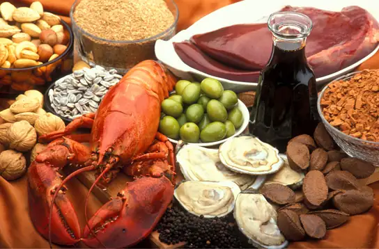
Table 34.3
| Minerals and Their Function in the Human Body | |||
|---|---|---|---|
| Mineral | Function | Deficiencies Can Lead To | Sources |
| *Calcium | Needed for muscle and neuron function; heart health; builds bone and supports synthesis and function of blood cells; nerve function | Osteoporosis, rickets, muscle spasms, impaired growth | Milk, yogurt, fish, green leafy vegetables, legumes |
| *Chlorine | Needed for production of hydrochloric acid (HCl) in the stomach and nerve function; osmotic balance | Muscle cramps, mood disturbances, reduced appetite | Table salt |
| Copper (trace amounts) | Required component of many redox enzymes, including cytochrome c oxidase; cofactor for hemoglobin synthesis | Copper deficiency is rare | Liver, oysters, cocoa, chocolate, sesame, nuts |
| Iodine | Required for the synthesis of thyroid hormones | Goiter | Seafood, iodized salt, dairy products |
| Iron | Required for many proteins and enzymes, notably hemoglobin, to prevent anemia | Anemia, which causes poor concentration, fatigue, and poor immune function | Red meat, leafy green vegetables, fish (tuna, salmon), eggs, dried fruits, beans, whole grains |
| *Magnesium | Required cofactor for ATP formation; bone formation; normal membrane functions; muscle function | Mood disturbances, muscle spasms | Whole grains, leafy green vegetables |
| Manganese (trace amounts) | A cofactor in enzyme functions; trace amounts are required | Manganese deficiency is rare | Common in most foods |
| Molybdenum (trace amounts) | Acts as a cofactor for three essential enzymes in humans: sulfite oxidase, xanthine oxidase, and aldehyde oxidase | Molybdenum deficiency is rare | |
| *Phosphorus | A component of bones and teeth; helps regulate acid-base balance; nucleotide synthesis | Weakness, bone abnormalities, calcium loss | Milk, hard cheese, whole grains, meats |
| *Potassium | Vital for muscles, heart, and nerve function | Cardiac rhythm disturbance, muscle weakness | Legumes, potato skin, tomatoes, bananas |
| Selenium (trace amounts) | A cofactor essential to activity of antioxidant enzymes like glutathione peroxidase; trace amounts are required | Selenium deficiency is rare | Common in most foods |
| *Sodium | Systemic electrolyte required for many functions; acid-base balance; water balance; nerve function | Muscle cramps, fatigue, reduced appetite | Table salt |
| Zinc (trace amounts) | Required for several enzymes such as carboxypeptidase, liver alcohol dehydrogenase, and carbonic anhydrase | Anemia, poor wound healing, can lead to short stature | Common in most foods |
| *Greater than 200mg/day required | |||
Table 34.4
| Essential Amino Acids | |
|---|---|
| Amino acids that must be consumed | Amino acids anabolized by the body |
| isoleucine | alanine |
| leucine | selenocysteine |
| lysine | aspartate |
| methionine | cysteine |
| phenylalanine | glutamate |
| tryptophan | glycine |
| valine | proline |
| histidine* | serine |
| threonine | tyrosine |
| arginine* | asparagine |
| *The human body can synthesize histidine and arginine, but not in the quantities required, especially for growing children. | |
Food Energy and ATP¶
Animals need food to obtain energy and maintain homeostasis. Homeostasis is the ability of a system to maintain a stable internal environment even in the face of external changes to the environment. For example, the normal body temperature of humans is 37°C (98.6°F). Humans maintain this temperature even when the external temperature is hot or cold. It takes energy to maintain this body temperature, and animals obtain this energy from food.
The primary source of energy for animals is carbohydrates, mainly glucose. Glucose is called the body’s fuel. The digestible carbohydrates in an animal’s diet are converted to glucose molecules through a series of catabolic chemical reactions.
Adenosine triphosphate, or ATP, is the primary energy currency in cells; ATP stores energy in phosphate ester bonds. ATP releases energy when the phosphodiester bonds are broken and ATP is converted to ADP and a phosphate group. ATP is produced by the oxidative reactions in the cytoplasm and mitochondrion of the cell, where carbohydrates, proteins, and fats undergo a series of metabolic reactions collectively called cellular respiration. For example, glycolysis is a series of reactions in which glucose is converted to pyruvic acid and some of its chemical potential energy is transferred to NADH and ATP.
ATP is required for all cellular functions. It is used to build the organic molecules that are required for cells and tissues; it provides energy for muscle contraction and for the transmission of electrical signals in the nervous system. When the amount of ATP is available in excess of the body’s requirements, the liver uses the excess ATP and excess glucose to produce molecules called glycogen. Glycogen is a polymeric form of glucose and is stored in the liver and skeletal muscle cells. When blood sugar drops, the liver releases glucose from stores of glycogen. Skeletal muscle converts glycogen to glucose during intense exercise. The process of converting glucose and excess ATP to glycogen and the storage of excess energy is an evolutionarily important step in helping animals deal with mobility, food shortages, and famine.
Everyday Connection: Obesity
Obesity is a major health concern in the United States, and there is a growing focus on reducing obesity and the diseases it may lead to, such as type-2 diabetes, cancers of the colon and breast, and cardiovascular disease. How does the food consumed contribute to obesity?
Fatty foods are calorie-dense, meaning that they have more calories per unit mass than carbohydrates or proteins. One gram of carbohydrates has four calories, one gram of protein has four calories, and one gram of fat has nine calories. Animals tend to seek lipid-rich food for their higher energy content.
The signals of hunger (“time to eat”) and satiety (“time to stop eating”) are controlled in the hypothalamus region of the brain. Foods that are rich in fatty acids tend to promote satiety more than foods that are rich only in carbohydrates.
Excess carbohydrate and ATP are used by the liver to synthesize glycogen. The pyruvate produced during glycolysis is used to synthesize fatty acids. When there is more glucose in the body than required, the resulting excess pyruvate is converted into molecules that eventually result in the synthesis of fatty acids within the body. These fatty acids are stored in adipose cells—the fat cells in the mammalian body whose primary role is to store fat for later use.
It is important to note that some animals benefit from obesity. Polar bears and seals need body fat for insulation and to keep them from losing body heat during Arctic winters. When food is scarce, stored body fat provides energy for maintaining homeostasis. Fats prevent famine in mammals, allowing them to access energy when food is not available on a daily basis; fats are stored when a large kill is made or lots of food is available.
34.3 Digestive System Processes¶
Learning Objectives
By the end of this section, you will be able to do the following:
- Describe the process of digestion
- Detail the steps involved in digestion and absorption
- Define elimination
- Explain the role of both the small and large intestines in absorption
Obtaining nutrition and energy from food is a multistep process. For true animals, the first step is ingestion, the act of taking in food. This is followed by digestion, absorption, and elimination. In the following sections, each of these steps will be discussed in detail.
Ingestion¶
The large molecules found in intact food cannot pass through the cell membranes. Food needs to be broken into smaller particles so that animals can harness the nutrients and organic molecules. The first step in this process is ingestion. Ingestion is the process of taking in food through the mouth. In vertebrates, the teeth, saliva, and tongue play important roles in mastication (preparing the food into bolus). While the food is being mechanically broken down, the enzymes in saliva begin to chemically process the food as well. The combined action of these processes modifies the food from large particles to a soft mass that can be swallowed and can travel the length of the esophagus.
Digestion and Absorption¶
Digestion is the mechanical and chemical breakdown of food into small organic fragments. It is important to break down macromolecules into smaller fragments that are of suitable size for absorption across the digestive epithelium. Large, complex molecules of proteins, polysaccharides, and lipids must be reduced to simpler particles such as simple sugar before they can be absorbed by the digestive epithelial cells. Different organs play specific roles in the digestive process. The animal diet needs carbohydrates, protein, and fat, as well as vitamins and inorganic components for nutritional balance. How each of these components is digested is discussed in the following sections.
Carbohydrates¶
The digestion of carbohydrates begins in the mouth. The salivary enzyme amylase begins the breakdown of food starches into maltose, a disaccharide. As the bolus of food travels through the esophagus to the stomach, no significant digestion of carbohydrates takes place. The esophagus produces no digestive enzymes but does produce mucous for lubrication. The acidic environment in the stomach stops the action of the amylase enzyme.
The next step of carbohydrate digestion takes place in the duodenum. Recall that the chyme from the stomach enters the duodenum and mixes with the digestive secretion from the pancreas, liver, and gallbladder. Pancreatic juices also contain amylase, which continues the breakdown of starch and glycogen into maltose, a disaccharide. The disaccharides are broken down into monosaccharides by enzymes called maltases, sucrases, and lactases, which are also present in the brush border of the small intestinal wall. Maltase breaks down maltose into glucose. Other disaccharides, such as sucrose and lactose are broken down by sucrase and lactase, respectively. Sucrase breaks down sucrose (or “table sugar”) into glucose and fructose, and lactase breaks down lactose (or “milk sugar”) into glucose and galactose. The monosaccharides (glucose) thus produced are absorbed and then can be used in metabolic pathways to harness energy. The monosaccharides are transported across the intestinal epithelium into the bloodstream to be transported to the different cells in the body. The steps in carbohydrate digestion are summarized in Figure 34.16 and Table 34.5.
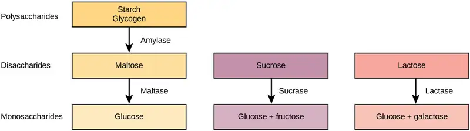
Table 34.5
| Digestion of Carbohydrates | ||||
|---|---|---|---|---|
| Enzyme | Produced By | Site of Action | Substrate Acting On | End Products |
| Salivary amylase | Salivary glands | Mouth | Polysaccharides (Starch) | Disaccharides (maltose), oligosaccharides |
| Pancreatic amylase | Pancreas | Small intestine | Polysaccharides (starch) | Disaccharides (maltose), monosaccharides |
| Oligosaccharidases | Lining of the intestine; brush border membrane | Small intestine | Disaccharides | Monosaccharides (e.g., glucose, fructose, galactose) |
Protein¶
A large part of protein digestion takes place in the stomach. The enzyme pepsin plays an important role in the digestion of proteins by breaking down the intact protein to peptides, which are short chains of four to nine amino acids. In the duodenum, other enzymes—trypsin, elastase, and chymotrypsin—act on the peptides reducing them to smaller peptides. Trypsin, elastase, carboxypeptidase, and chymotrypsin are produced by the pancreas and released into the duodenum where they act on the chyme. Further breakdown of peptides to single amino acids is aided by enzymes called peptidases (those that break down peptides). Specifically, carboxypeptidase, dipeptidase, and aminopeptidase play important roles in reducing the peptides to free amino acids. The amino acids are absorbed into the bloodstream through the small intestines. The steps in protein digestion are summarized in Figure 34.17 and Table 34.6.
![Protein digestion begins in the stomach, where pepsin breaks proteins down into fragments, called peptides. Further digestion occurs in the small intestine, where a variety of enzymes break peptides down into smaller peptides, and then into individual amino acids. Several of the protein-digesting enzymes found in the small intestine are secreted from the pancreas. Amino acids are absorbed from the small intestine into the blood stream. The liver regulates the distribution of amino acids to the rest of the body. A small amount of dietary protein is lost in the feces.](img/figure-b34-03-02.webp)
Table 34.6
| Digestion of Protein | ||||
|---|---|---|---|---|
| Enzyme | Produced By | Site of Action | Substrate Acting On | End Products |
| Pepsin | Stomach chief cells | Stomach | Proteins | Peptides |
| • Trypsin • Elastase Chymotrypsin |
Pancreas | Small intestine | Peptides | Smaller Peptides |
| Carboxypeptidase | Pancreas | Small intestine | Peptides | Amino acids and peptides |
| • Aminopeptidase • Dipeptidase |
Lining of intestine | Small intestine | Peptides | Amino acids |
Lipids¶
Lipid digestion begins in the stomach with the aid of lingual lipase and gastric lipase. However, the bulk of lipid digestion occurs in the small intestine due to pancreatic lipase. When chyme enters the duodenum, the hormonal responses trigger the release of bile, which is produced in the liver and stored in the gallbladder. Bile aids in the digestion of lipids, primarily triglycerides by emulsification. Emulsification is a process in which large lipid globules are broken down into several small lipid globules. These small globules are more widely distributed in the chyme rather than forming large aggregates. Lipids are hydrophobic substances: in the presence of water, they will aggregate to form globules to minimize exposure to water. Bile contains bile salts, which are amphipathic, meaning they contain hydrophobic and hydrophilic parts. Thus, the bile salts hydrophilic side can interface with water on one side and the hydrophobic side interfaces with lipids on the other. By doing so, bile salts emulsify large lipid globules into small lipid globules.
Why is emulsification important for digestion of lipids? Pancreatic juices contain enzymes called lipases (enzymes that breakdown lipids). If the lipid in the chyme aggregates into large globules, very little surface area of the lipids is available for the lipases to act on, leaving lipid digestion incomplete. By forming an emulsion, bile salts increase the available surface area of the lipids manyfold. The pancreatic lipases can then act on the lipids more efficiently and digest them, as detailed in Figure 34.18. Lipases break down the lipids into fatty acids and glycerides. These molecules can pass through the plasma membrane of the cell and enter the epithelial cells of the intestinal lining. The bile salts surround long-chain fatty acids and monoglycerides forming tiny spheres called micelles. The micelles move into the brush border of the small intestine absorptive cells where the long-chain fatty acids and monoglycerides diffuse out of the micelles into the absorptive cells leaving the micelles behind in the chyme. The long-chain fatty acids and monoglycerides recombine in the absorptive cells to form triglycerides, which aggregate into globules and become coated with proteins. These large spheres are called chylomicrons. Chylomicrons contain triglycerides, cholesterol, and other lipids and have proteins on their surface. The surface is also composed of the hydrophilic phosphate "heads" of phospholipids. Together, they enable the chylomicron to move in an aqueous environment without exposing the lipids to water. Chylomicrons leave the absorptive cells via exocytosis. Chylomicrons enter the lymphatic vessels, and then enter the blood in the subclavian vein.
![Illustration shows a row of absorptive epithelial cells that line the intestinal lumen. Hair-like microvilli project into the lumen. On the other side of the epithelial cells are capillaries and lymphatic vessels. In the intestinal lumen, lipids are emulsified by the bile. Lipases breakdown fats, also known as triglycerides, into fatty acids and monoglycerides. Fats are made up of three fatty acids attached to a 3-carbon glycerol backbone. In monoglycerides, two of the fatty acids are removed. The emulsified lipids form small, spherical particles called micelles that are absorbed by the epithelial cells. Inside the epithelial cells the fatty acids and monoglyerides are reassembled into triglycerides. The triglycerides aggregate with cholesterol, proteins, and phospholipids to form spherical chylomicrons. The chylomicrons are moved into a lymph capillary, which transports them to the rest of the body.](img/figure-34-03-03.webp)
Vitamins¶
Vitamins can be either water-soluble or lipid-soluble. Fat soluble vitamins are absorbed in the same manner as lipids. It is important to consume some amount of dietary lipid to aid the absorption of lipid-soluble vitamins. Water-soluble vitamins can be directly absorbed into the bloodstream from the intestine.
Interactive
This website has an overview of the digestion of protein, fat, and carbohydrates.
Visual Connection
![Steps in mechanical and chemical digestion are shown. Digestion begins in the mouth, where chewing and swallowing mechanically breaks down food into smaller particles, and enzymes chemically digest carbohydrates. In the stomach, mechanical digestion includes peristaltic mixing and propulsion. Chemical digestion of proteins occurs, and lipid-soluble substances such as aspirin are absorbed. In the small intestine, mechanical digestion occurs through mixing and propulsion, primarily by segmentation. Chemical digestion of carbohydrates, lipids, proteins and nucleic acid occurs. Peptides, amino acids, glucose, fructose, lipids, water, vitamins, and minerals are absorbed into the bloodstream. In the large intestine, mechanical digestion occurs through segmental mixing and mass movement. No chemical digestion occurs except for digestion by bacteria. Water, ions, vitamins, minerals, and small organic molecules produced by bacteria are absorbed into the bloodstream.](img/figure-34-03-04.webp)
Which of the following statements about digestive processes is true?
- Amylase, maltase, and lactase in the mouth digest carbohydrates.
- Trypsin and lipase in the stomach digest protein.
- Bile emulsifies lipids in the small intestine.
- No food is absorbed until the small intestine.
Elimination¶
The final step in digestion is the elimination of undigested food content and waste products. The undigested food material enters the colon, where most of the water is reabsorbed. Recall that the colon is also home to the microflora called “intestinal flora” that aid in the digestion process. The semi-solid waste is moved through the colon by peristaltic movements of the muscle and is stored in the rectum. As the rectum expands in response to storage of fecal matter, it triggers the neural signals required to set up the urge to eliminate. The solid waste is eliminated through the anus using peristaltic movements of the rectum.
Common Problems with Elimination¶
Diarrhea and constipation are some of the most common health concerns that affect digestion. Constipation is a condition where the feces are hardened because of excess water removal in the colon. In contrast, if enough water is not removed from the feces, it results in diarrhea. Many bacteria, including the ones that cause cholera, affect the proteins involved in water reabsorption in the colon and result in excessive diarrhea.
Emesis¶
Emesis, or vomiting, is elimination of food by forceful expulsion through the mouth. It is often in response to an irritant that affects the digestive tract, including but not limited to viruses, bacteria, emotions, sights, and food poisoning. This forceful expulsion of the food is due to the strong contractions produced by the stomach muscles. The process of emesis is regulated by the medulla.
34.4 Digestive System Regulation¶
Learning Objectives
By the end of this section, you will be able to do the following:
- Discuss the role of neural regulation in digestive processes
- Explain how hormones regulate digestion
The brain is the control center for the sensation of hunger and satiety. The functions of the digestive system are regulated through neural and hormonal responses.
Neural Responses to Food¶
In reaction to the smell, sight, or thought of food, like that shown in Figure 34.20, the first response is that of salivation. The salivary glands secrete more saliva in response to stimulation by the autonomic nervous system triggered by food in preparation for digestion. Simultaneously, the stomach begins to produce hydrochloric acid to digest the food. Recall that the peristaltic movements of the esophagus and other organs of the digestive tract are under the control of the brain. The brain prepares these muscles for movement as well. When the stomach is full, the part of the brain that detects satiety signals fullness. There are three overlapping phases of gastric control—the cephalic phase, the gastric phase, and the intestinal phase—each requires many enzymes and is under neural control as well.
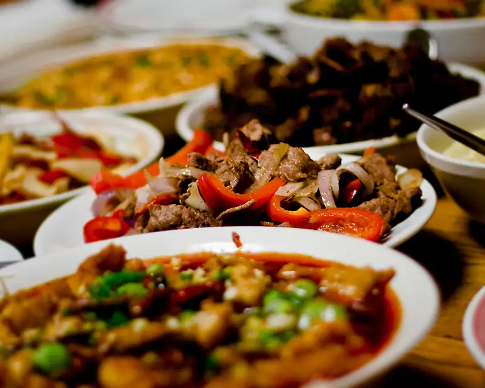
Digestive Phases¶
The response to food begins even before food enters the mouth. The first phase of ingestion, called the cephalic phase, is controlled by the neural response to the stimulus provided by food. All aspects—such as sight, thought, and smell—trigger the neural responses resulting in salivation and secretion of gastric juices. The gastric and salivary secretion in the cephalic phase can also take place due to the thought of food. Right now, if you think about a piece of chocolate or a crispy potato chip, the increase in salivation is a cephalic phase response to the thought. The central nervous system prepares the stomach to receive food.
The gastric phase begins once the food arrives in the stomach. It builds on the stimulation provided during the cephalic phase. Gastric acids and enzymes process the ingested materials. The gastric phase is stimulated by (1) distension of the stomach, (2) an increase in the pH of the gastric contents, and (3) the presence of undigested material. This phase consists of local, hormonal, and neural responses. These responses stimulate secretions and powerful contractions.
The intestinal phase begins when chyme enters the small intestine triggering digestive secretions. This phase controls the rate of gastric emptying. In addition to gastric emptying, when chyme enters the small intestine, it triggers other hormonal and neural events that coordinate the activities of the intestinal tract, pancreas, liver, and gallbladder.
Hormonal Responses to Food¶
The endocrine system controls the response of the various glands in the body and the release of hormones at the appropriate times.
One of the important factors under hormonal control is the stomach acid environment. During the gastric phase, the hormone gastrin is secreted by G cells in the stomach in response to the presence of proteins. Gastrin stimulates the release of stomach acid, or hydrochloric acid (HCl) which aids in the digestion of the proteins. However, when the stomach is emptied, the acidic environment need not be maintained and a hormone called somatostatin stops the release of hydrochloric acid. This is controlled by a negative feedback mechanism.
In the duodenum, digestive secretions from the liver, pancreas, and gallbladder play an important role in digesting chyme during the intestinal phase. In order to neutralize the acidic chyme, a hormone called secretin stimulates the pancreas to produce alkaline bicarbonate solution and deliver it to the duodenum. Secretin acts in tandem with another hormone called cholecystokinin (CCK). Not only does CCK stimulate the pancreas to produce the requisite pancreatic juices, it also stimulates the gallbladder to release bile into the duodenum.
Interactive
Visit this website to learn more about the endocrine system. Review how control is implemented in the endocrine system.
Another level of hormonal control occurs in response to the composition of food. Foods high in lipids take a long time to digest. A hormone called gastric inhibitory peptide is secreted by the small intestine to slow down the peristaltic movements of the intestine to allow fatty foods more time to be digested and absorbed.
Understanding the hormonal control of the digestive system is an important area of ongoing research. Scientists are exploring the role of each hormone in the digestive process and developing ways to target these hormones. Advances could lead to knowledge that may help to battle the obesity epidemic.
Chapter Review¶
Key Terms¶
- alimentary canal
- tubular digestive system with a mouth and anus
- aminopeptidase
- protease that breaks down peptides to single amino acids; secreted by the brush border of small intestine
- anus
- exit point for waste material
- bile
- digestive juice produced by the liver; important for digestion of lipids
- bolus
- mass of food resulting from chewing action and wetting by saliva
- carboxypeptidase
- protease that breaks down peptides to single amino acids; secreted by the brush border of the small intestine
- carnivore
- animal that consumes animal flesh
- cephalic phase
- first phase of digestion, controlled by the neural response to the stimulus provided by food
- cholecystokinin
- hormone that stimulates the contraction of the gallbladder to release bile
- chylomicron
- small lipid globule
- chyme
- mixture of partially digested food and stomach juices
- chymotrypsin
- pancreatic protease
- digestion
- mechanical and chemical breakdown of food into small organic fragments
- dipeptidase
- protease that breaks down peptides to single amino acids; secreted by the brush border of small intestine
- duodenum
- first part of the small intestine where a large part of digestion of carbohydrates and fats occurs
- elastase
- pancreatic protease
- endocrine system
- system that controls the response of the various glands in the body and the release of hormones at the appropriate times
- esophagus
- tubular organ that connects the mouth to the stomach
- essential nutrient
- nutrient that cannot be synthesized by the body; it must be obtained from food
- gallbladder
- organ that stores and concentrates bile
- gastric inhibitory peptide
- hormone secreted by the small intestine in the presence of fatty acids and sugars; it also inhibits acid production and peristalsis in order to slow down the rate at which food enters the small intestine
- gastric phase
- digestive phase beginning once food enters the stomach; gastric acids and enzymes process the ingested materials
- gastrin
- hormone which stimulates hydrochloric acid secretion in the stomach
- gastrovascular cavity
- digestive system consisting of a single opening
- gizzard
- muscular organ that grinds food
- herbivore
- animal that consumes a strictly plant diet
- ileum
- last part of the small intestine; connects the small intestine to the large intestine; important for absorption of B-12
- ingestion
- act of taking in food
- intestinal phase
- third digestive phase; begins when chyme enters the small intestine triggering digestive secretions and controlling the rate of gastric emptying
- jejunum
- second part of the small intestine
- lactase
- enzyme that breaks down lactose into glucose and galactose
- large intestine
- digestive system organ that reabsorbs water from undigested material and processes waste matter
- lipase
- enzyme that chemically breaks down lipids
- liver
- organ that produces bile for digestion and processes vitamins and lipids
- maltase
- enzyme that breaks down maltose into glucose
- mineral
- inorganic, elemental molecule that carries out important roles in the body
- monogastric
- digestive system that consists of a single-chambered stomach
- omnivore
- animal that consumes both plants and animals
- pancreas
- gland that secretes digestive juices
- pepsin
- enzyme found in the stomach whose main role is protein digestion
- pepsinogen
- inactive form of pepsin
- peristalsis
- wave-like movements of muscle tissue
- proventriculus
- glandular part of a bird’s stomach
- rectum
- area of the body where feces is stored until elimination
- roughage
- component of food that is low in energy and high in fiber
- ruminant
- animal with a stomach divided into four compartments
- salivary amylase
- enzyme found in saliva, which converts carbohydrates to maltose
- secretin
- hormone which stimulates sodium bicarbonate secretion in the small intestine
- small intestine
- organ where digestion of protein, fats, and carbohydrates is completed
- somatostatin
- hormone released to stop acid secretion when the stomach is empty
- sphincter
- band of muscle that controls movement of materials throughout the digestive tract
- stomach
- saclike organ containing acidic digestive juices
- sucrase
- enzyme that breaks down sucrose into glucose and fructose
- trypsin
- pancreatic protease that breaks down protein
- villi
- folds on the inner surface of the small intestine whose role is to increase absorption area
- vitamin
- organic substance necessary in small amounts to sustain life
Summary¶
34.1 Digestive Systems¶
Different animals have evolved different types of digestive systems specialized to meet their dietary needs. Humans and many other animals have monogastric digestive systems with a single-chambered stomach. Birds have evolved a digestive system that includes a gizzard where the food is crushed into smaller pieces. This compensates for their inability to masticate. Ruminants that consume large amounts of plant material have a multi-chambered stomach that digests roughage. Pseudo-ruminants have similar digestive processes as ruminants but do not have the four-compartment stomach. Processing food involves ingestion (eating), digestion (mechanical and enzymatic breakdown of large molecules), absorption (cellular uptake of nutrients), and elimination (removal of undigested waste as feces).
Many organs work together to digest food and absorb nutrients. The mouth is the point of ingestion and the location where both mechanical and chemical breakdown of food begins. Saliva contains an enzyme called amylase that breaks down carbohydrates. The food bolus travels through the esophagus by peristaltic movements to the stomach. The stomach has an extremely acidic environment. An enzyme called pepsin digests protein in the stomach. Further digestion and absorption take place in the small intestine. The large intestine reabsorbs water from the undigested food and stores waste until elimination.
34.2 Nutrition and Energy Production¶
Animal diet should be balanced and meet the needs of the body. Carbohydrates, proteins, and fats are the primary components of food. Some essential nutrients are required for cellular function but cannot be produced by the animal body. These include vitamins, minerals, some fatty acids, and some amino acids. Food intake in more than necessary amounts is stored as glycogen in the liver and muscle cells, and in fat cells. Excess adipose storage can lead to obesity and serious health problems. ATP is the energy currency of the cell and is obtained from the metabolic pathways. Excess carbohydrates and energy are stored as glycogen in the body.
34.3 Digestive System Processes¶
Digestion begins with ingestion, where the food is taken in the mouth. Digestion and absorption take place in a series of steps with special enzymes playing important roles in digesting carbohydrates, proteins, and lipids. Elimination describes removal of undigested food contents and waste products from the body. While most absorption occurs in the small intestines, the large intestine is responsible for the final removal of water that remains after the absorptive process of the small intestines. The cells that line the large intestine absorb some vitamins as well as any leftover salts and water. The large intestine (colon) is also where feces is formed.
34.4 Digestive System Regulation¶
The brain and the endocrine system control digestive processes. The brain controls the responses of hunger and satiety. The endocrine system controls the release of hormones and enzymes required for digestion of food in the digestive tract.
Visual Connection Questions¶
34.1 Digestive Systems¶
1. Figure 34.11 Which of the following statements about the digestive system is false?
- Chyme is a mixture of food and digestive juices that is produced in the stomach.
- Food enters the large intestine before the small intestine.
- In the small intestine, chyme mixes with bile, which emulsifies fats.
- The stomach is separated from the small intestine by the pyloric sphincter.
Answer
2. Figure 34.12 Which of the following statements about the small intestine is false?
- Absorptive cells that line the small intestine have microvilli, small projections that increase surface area and aid in the absorption of food.
- The inside of the small intestine has many folds, called villi.
- Microvilli are lined with blood vessels as well as lymphatic vessels.
- The inside of the small intestine is called the lumen.
Answer
34.3 Digestive System Processes¶
3. Figure 34.19 Which of the following statements about digestive processes is true?
- Amylase, maltase, and lactase in the mouth digest carbohydrates.
- Trypsin and lipase in the stomach digest protein.
- Bile emulsifies lipids in the small intestine.
- No food is absorbed until the small intestine.
Answer
Review Questions¶
34.1 Digestive Systems¶
4. Which of the following is a pseudo-ruminant?
- cow
- pig
- crow
- horse
Answer
D
5. Which of the following statements is untrue?
- Roughage takes a long time to digest.
- Birds eat large quantities at one time so that they can fly long distances.
- Cows do not have upper teeth.
- In pseudo-ruminants, roughage is digested in the cecum.
Answer
B
6. The acidic nature of chyme is neutralized by ________.
- potassium hydroxide
- sodium hydroxide
- bicarbonates
- vinegar
Answer
C
7. The digestive juices from the liver are delivered to the ________.
- stomach
- liver
- duodenum
- colon
Answer
C
8. A scientist dissects a new species of animal. If the animal’s digestive system has a single stomach with an extended small intestine, to which animal could the dissected specimen be closely related?
- lion
- snowshoe hare
- earthworm
- eagle
Answer
B
34.2 Nutrition and Energy Production¶
9. Which of the following statements is not true?
- Essential nutrients can be synthesized by the body.
- Vitamins are required in small quantities for bodily function.
- Some amino acids can be synthesized by the body, while others need to be obtained from diet.
- Vitamins come in two categories: fat-soluble and water-soluble.
Answer
A
10. Which of the following is a water-soluble vitamin?
- vitamin A
- vitamin E
- vitamin K
- vitamin C
Answer
D
11. What is the primary fuel for the body?
- carbohydrates
- lipids
- protein
- glycogen
Answer
A
12. Excess glucose is stored as ________.
- fat
- glucagon
- glycogen
- it is not stored in the body
Answer
C
13. Many distance runners “carb load” the day before a big race. How does this eating strategy provide an advantage to the runner?
- The carbohydrates cause the release of insulin.
- The excess carbohydrates are converted to fats, which have a higher calorie density.
- The glucose from the carbohydrates lets the muscles make excess ATP overnight.
- The excess carbohydrates can be stored in the muscles as glycogen.
Answer
D
34.3 Digestive System Processes¶
14. Where does the majority of protein digestion take place?
- stomach
- duodenum
- mouth
- jejunum
Answer
A
15. Lipases are enzymes that breakdown ________.
- disaccharides
- lipids
- proteins
- cellulose
Answer
B
16. Which of the following conditions is most likely to cause constipation?
- bacterial infection
- dehydration
- ulcer
- excessive cellulose consumption
Answer
B
34.4 Digestive System Regulation¶
17. Which hormone controls the release of bile from the gallbladder
- pepsin
- amylase
- CCK
- gastrin
Answer
C
18. Which hormone stops acid secretion in the stomach?
- gastrin
- somatostatin
- gastric inhibitory peptide
- CCK
Answer
B
19. In the famous conditioning experiment, Pavlov demonstrated that his dogs started drooling in response to a bell sounding. What part of the digestive process did he stimulate?
- cephalic phase
- gastric phase
- intestinal phase
- elimination phase
Answer
A
Critical Thinking Questions¶
34.1 Digestive Systems¶
20. How does the polygastric digestive system aid in digesting roughage?
Answer
Animals with a polygastric digestive system have a multi-chambered stomach. The four compartments of the stomach are called the rumen, reticulum, omasum, and abomasum. These chambers contain many microbes that break down the cellulose and ferment the ingested food. The abomasum is the “true” stomach and is the equivalent of a monogastric stomach chamber where gastric juices are secreted. The four-compartment gastric chamber provides larger space and the microbial support necessary for ruminants to digest plant material.
21. How do birds digest their food in the absence of teeth?
Answer
Birds have a stomach chamber called a gizzard. Here, the food is stored, soaked, and ground into finer particles, often using pebbles. Once this process is complete, the digestive juices take over in the proventriculus and continue the digestive process.
22. What is the role of the accessory organs in digestion?
Answer
Accessory organs play an important role in producing and delivering digestive juices to the intestine during digestion and absorption. Specifically, the salivary glands, liver, pancreas, and gallbladder play important roles. Malfunction of any of these organs can lead to disease states.
23. Explain how the villi and microvilli aid in absorption.
Answer
The villi and microvilli are folds on the surface of the small intestine. These folds increase the surface area of the intestine and provide more area for the absorption of nutrients.
24. Name two components of the digestive system that perform mechanical digestion. Describe how mechanical digestion contributes to acquiring nutrients from food.
Answer
The stomach and the teeth both perform mechanical digestion, which is physically (as opposed to chemically) breaking the food into smaller components. This exposes a larger surface area for chemical digestion and release of nutrients. The teeth are vital to mastication, which breaks large bites of food down into smaller pieces that are easily swallowed. The stomach’s muscle contractions churn the food to expose all particles to the acid and digestive enzymes.
34.2 Nutrition and Energy Production¶
25. What are essential nutrients?
Answer
Essential nutrients are those nutrients that must be obtained from the diet because they cannot be produced by the body. Vitamins and minerals are examples of essential nutrients.
26. What is the role of minerals in maintaining good health?
Answer
Minerals—such as potassium, sodium, and calcium—are required for the functioning of many cellular processes, including muscle contraction and nerve conduction. While minerals are required in trace amounts, not having minerals in the diet can be potentially harmful.
27. Discuss why obesity is a growing epidemic.
Answer
In the United States, obesity, particularly childhood obesity, is a growing concern. Some of the contributors to this situation include sedentary lifestyles and consuming more processed foods and less fruits and vegetables. As a result, even young children who are obese can face health concerns.
28. There are several nations where malnourishment is a common occurrence. What may be some of the health challenges posed by malnutrition?
Answer
Malnutrition, often in the form of not getting enough calories or not enough of the essential nutrients, can have severe consequences. Many malnourished children have vision and dental problems, and over the years may develop many serious health problems.
29. Generally describe how a piece of bread can power your legs as you walk up a flight of stairs.
Answer
A piece of bread is eaten and converted into chemical energy. The bread is broken down in the mouth by mastication and salivary enzymes, then transferred to the stomach for further digestion. After digestion by the acid and digestive enzymes in the stomach, the macromolecules that made up the bread move into the small intestine. In the small intestine, the carbohydrates from the bread are absorbed through the microvilli into the bloodstream. In muscle cells in the legs, the carbohydrates can be broken down into glucose, and then used for cellular respiration to create ATP. The muscles in the leg then use the ATP to perform the mechanical work needed to climb a flight of stairs.
30. In the 1990s fat-free foods became popular among people trying to lose weight. However, many dieticians now conclude that the fat-free trend made people less healthy and heavier. Describe how this could occur.
Answer
Fats are an essential component of a healthy diet, and needed by the body to function. Fats are essential for many processes, including the absorption of fat-soluble vitamins and production of some hormones. Fats also send a satiation signal to the brain that regulates hunger. Without fats in their diets many people may have actually consumed more calories, which would have resulted in weight gain.
34.3 Digestive System Processes¶
31. Explain why some dietary lipid is a necessary part of a balanced diet.
Answer
Lipids add flavor to food and promote a sense of satiety or fullness. Fatty foods are sources of high energy; one gram of lipid contains nine calories. Lipids are also required in the diet to aid the absorption of lipid-soluble vitamins and for the production of lipid-soluble hormones.
32. The gut microbiome (the bacterial colonies in the intestines) have become a popular area of study in biomedical research. How could varying gut microbiomes impact a person’s nutrition?
Answer
The gut microbiome includes all the bacteria that aid in chemical digestion in the intestines. Changing its composition can change the way that food is digested since not all bacteria have the same macromolecule-digesting enzymes. Additionally, changes in gut microbiome can lead to the establishment of pathogenic bacteria populations that cause inflammation in the gut or other disease.
33. Many mammals become ill if they drink milk as adults even though they could consume it as babies. What causes this digestive issue?
Answer
As mammals wean from their mothers they stop drinking milk. Since they stop consuming the sugar lactose their bodies conserve resources by no longer making the enzyme lactase. If the animals then consume lactose at some point in the future their digestive system cannot break the lactose molecules into glucose and galactose for absorption. When gut bacteria further along the digestive tract interact with the lactose molecules it causes symptoms of lactose intolerance.
34.4 Digestive System Regulation¶
34. Describe how hormones regulate digestion.
Answer
Hormones control the different digestive enzymes that are secreted in the stomach and the intestine during the process of digestion and absorption. For example, the hormone gastrin stimulates stomach acid secretion in response to food intake. The hormone somatostatin stops the release of stomach acid.
35. Describe one or more scenarios where loss of hormonal regulation of digestion can lead to diseases.
Answer
There are many cases where loss of hormonal regulation can lead to illnesses. For example, the bilirubin produced by the breakdown of red blood cells is converted to bile by the liver. When there is malfunction of this process, there is excess bilirubin in the blood and bile levels are low. As a result, the body struggles with dealing with fatty food. This is why a patient suffering from jaundice is asked to eat a diet with almost zero fat.
36. A scientist is studying a model that has a mutation in the receptor for somatostatin that prevents hormone binding. How would this mutation affect the structure and function of the digestive system?
Answer
Somatostatin is the hormone that inhibits the release of HCl into the stomach lumen after the chyme has moved to the intestine. If the receptor for somatostatin is nonfunctional, somatostatin cannot signal to the stomach parietal cells to stop acid secretion. Thus, acid secretion will continue when there is no food present, and can cause damage to the stomach tissue. However, as long as the stomach remains intact the mutation should not slow digestion since acid will always be present in the stomach to digest any new boluses of food.
Adapted from Biology 2e by OpenStax, licensed under CC BY 4.0. Access the original for free at openstax.org. Changes: converted to the web reading format of The Open Book Project.